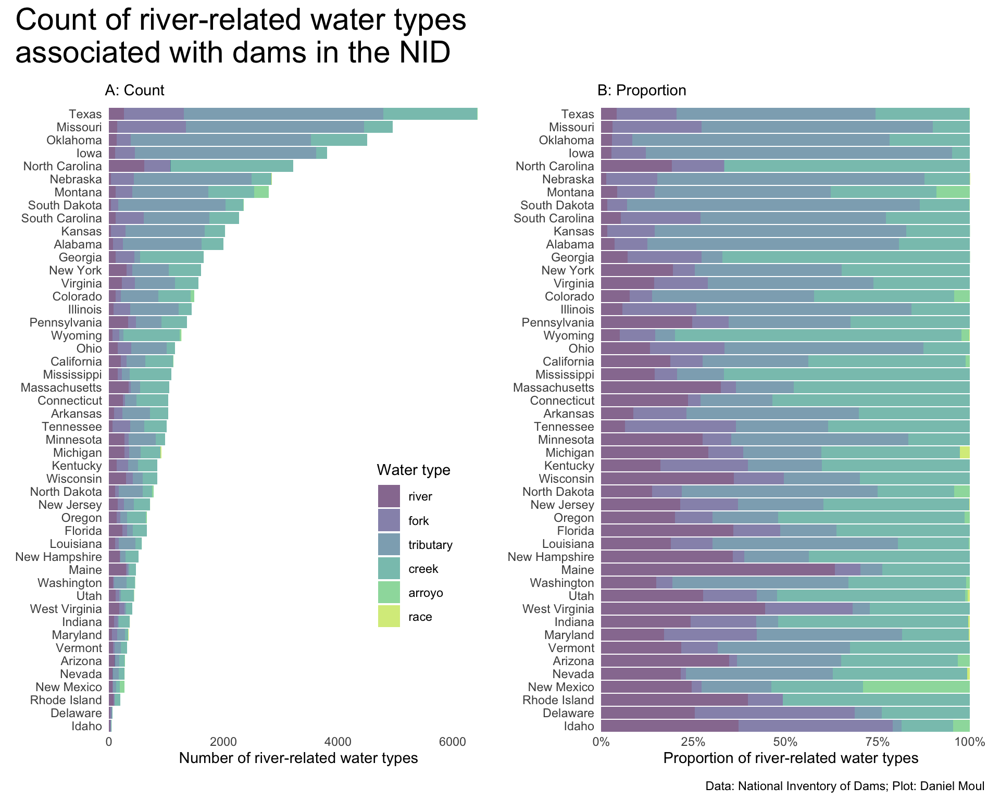
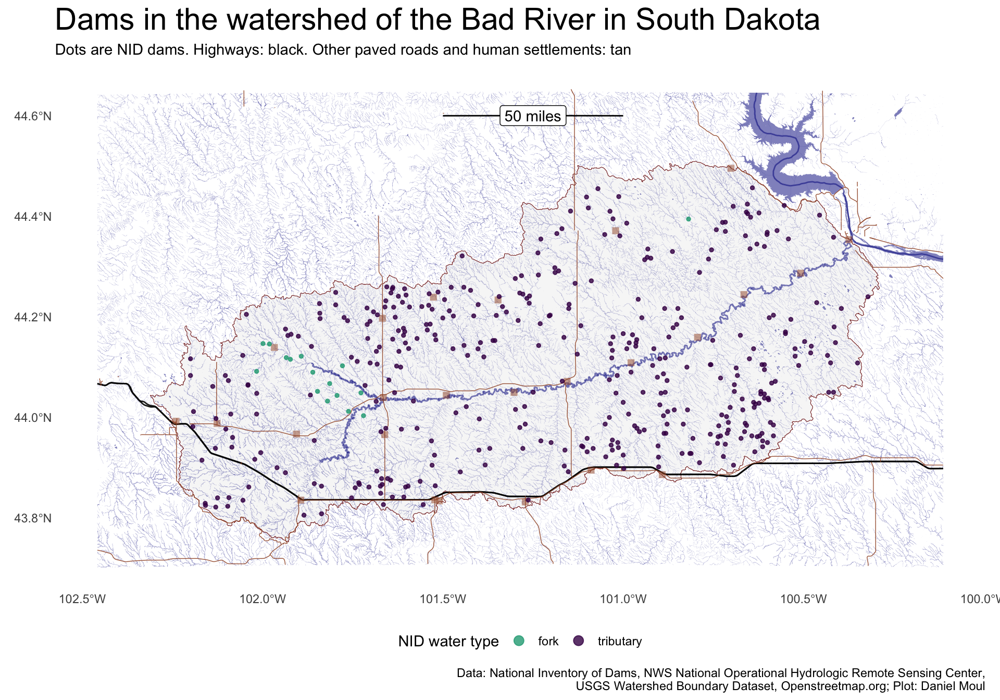
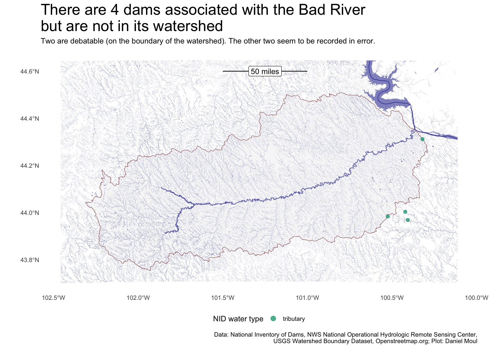
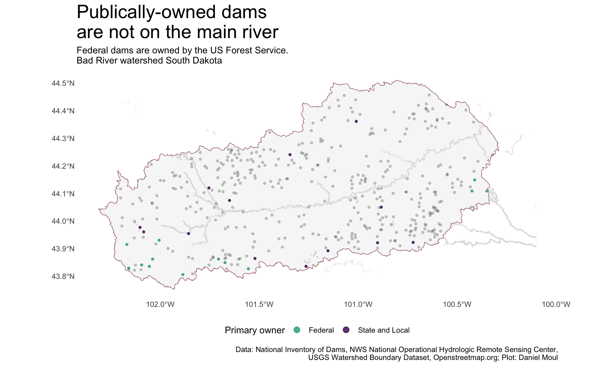
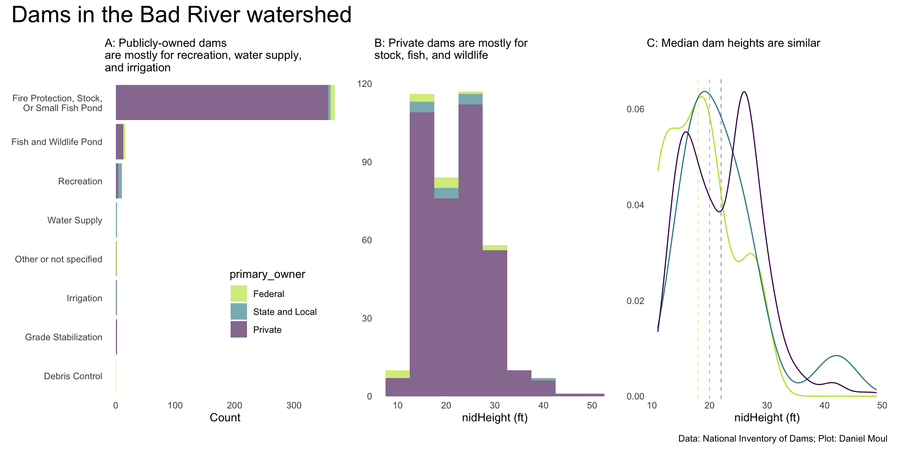

Almost all dams are associated with a waterway.1 A dam is either the origin of a waterway, or a break in its flow.
Show the code
dams_and_rivers <- dams_no_geo |>filter(str_detect(riverName, "^[A-Za-z]"), #get rid of mostly junk riverName !="unknnown" ) |>mutate(water_name =str_to_lower(riverName)) |>filter(!str_detect( water_name,c("unknown|unknnown|unnamed|na|n[/]a|0|^u[/]n |^un |u[/]s") ),# !str_detect(water_name, c("off( )?([-])?stream|([-])?( )?os|os-|off([ -]( ?))?channel|off |^os |none|^u[/]n |^un "))!str_detect( water_name,c("off( )?([-])?stream|([-])?( )?os|os-|off([ -]( ?))?channel|off |^os |none|^u[/]n |^un " ) ) ) |>mutate(water_name =str_remove( water_name,"^ut to |^unt of |^unt of unt of |^unk of " ),water_name =str_replace( water_name,"(.+)(-( )?tr$| trib$)","tributary to \\1" ),water_name =str_replace_all( water_name,c("[/]"=" / ","[.]"=". ","\\("=" ","\\)"=" ",'"'="",#"[-]" = "- "," ck[.] | ck "=" creek "," crk[.]| crk"=" creek"," cr([.])?$| ck$"=" creek","( )?riv$"=" river","rvr"="river","( r|r[.])( )?$"=" river","bch|br[.| ]|br[-]|br$"="branch ","^trib([.])? "="tributary ","fk"="fork","(t)?tr to( )?"="tributary to ","tr[.-]( )?"="tributary to ","tr (of )?"="tributary to ","tri (to)?"="tributary to ",", trib( |[.]|[/])"=" tributary to ","trib[.]([-])?"=" tributary to ","trib (of|to)?"=" tributary to ","trib[/]"=" tributary to ","trib[-]"=" tributary to ","tributary( )[-]"="tributary to","tributary to - "="tributary to ","tributary of"="tributary to","to to|to of"="to","n[.]f[.]"="north fork ","e[.]f[.]"="east fork ","s[.]f[.]"="south fork ","w[.]f[.]"="west fork ","^e([.])? "="east ","^e[.]| e[.]"=" east "," e[.]"=" east ","^w([.])? "="west ","^w[.]| w[.]"=" west "," w "=" west ","^n([.])? |^no([.])? "="north ","^n[.]| n[.]"=" north "," n "=" north ","nork |noth "="north ","^s[.]| s[.]"=" south "," s "=" south "," so[.]"=" south ","^s([.])? |^so([.])? "="south ","no[.]([ ]+)? fork"="north fork" ), ),trib_to =str_extract( water_name,"(?<=tributary (of|to )?).+|(?= tributary).+" ),trib_to =str_remove_all(trib_to, "to |^ ") ) |>mutate(water_name =str_remove( water_name,", trib to$|^tr-( )?|[-]( )?tr|[-][ ]+?tr" ),water_name =str_replace_all( water_name,c("badriver"="bad river","tobad river"="bad river","trimissouri"="tributary to missouri" ) ),water_name =str_squish(water_name),water_name_root =str_remove(water_name, "tributary (to )?") ) |>mutate(water_type =case_when(str_detect(water_name, "fork|prong|branch") ~"fork",str_detect(water_name, "tributary") ~"tributary",str_detect(water_name, "creek|brook| bk$|draw") ~"creek",str_detect(water_name, "race|drain") ~"race",str_detect(water_name, "arroyo|gulch|coulee|draw$") ~"arroyo",.default ="river" ),water_type =factor( water_type,levels =c("river", "fork", "tributary", "creek", "race", "arroyo") ) ) |>filter(str_detect(water_name, "^[A-Za-z]")) |># get rid of more mostly junk after removing some prefixesselect( water_name, water_type, trib_to, water_name_root, riverName, name, nidId, state, nidStorage, yearCompleted,starts_with("is_") )
9.1 Types of waterways associated with dams
Show the code
dams_and_rivers_count_by_state <- dams_and_rivers |>count(water_name, water_type, water_name_root, state, sort =TRUE) |>arrange(state, water_name_root)dams_and_rivers_count_by_state_simplified <- dams_and_rivers |>count(water_type, state, sort =TRUE) |>arrange(state)dams_and_rivers_for_plotting <-left_join( dams,left_join( dams_and_rivers_count_by_state |>select(-n), dams_and_rivers |>select(nidId, state, water_name, water_name_root, riverName, starts_with("is_")),by =join_by(state, water_name, water_name_root) ),by =join_by(nidId, state, riverName) )###### Bad river watershed# https://www.usgs.gov/national-hydrography/access-national-hydrography-products# # The Bad River HUC8 code# bad_river_huc8 <- "10140102"# Manually downloaded from https://prd-tnm.s3.amazonaws.com/index.html?prefix=StagedProducts/Hydrography/NHD/HU8/Shape/bad_river_watershed <-st_read(here("data/raw/usgs/NHD-10140102/NHD_H_10140102_HU8_Shape/Shape"),quiet =TRUE)bad_river_watershed_with_buffer <-st_buffer(bad_river_watershed, dist = watershed_buffer) # in metersdams_in_buffer_bbox <-st_bbox(bad_river_watershed_with_buffer)# using mask() on a spatVector does better than st_join(join = st_within)dams_in_bad_river_watershed_tmp <-st_crop(dams_and_rivers_for_plotting, bad_river_watershed) |>st_join(st_as_sf(st_union(bad_river_watershed)), join = st_within, left =FALSE) |>mutate(water_type =case_when(str_detect(water_name, "fork") ~"fork",str_detect(water_name, "tributary") ~"tributary",.default ="tributary" ),water_type =factor(water_type, levels =c("river", "fork", "tributary")),primary_owner =fct_collapse(primaryOwnerTypeId ,"State and Local"=c("State", "Local Government"))) # using mask() on a spatVector does better than st_join(join = st_within)dams_in_bad_river_watershed <-mask(crop(vect(dams_in_bad_river_watershed_tmp), bad_river_watershed), vect(bad_river_watershed)) |>st_as_sf()dams_in_buffer_around_bad_river_watershed_tmp <-st_crop(dams_and_rivers_for_plotting, bad_river_watershed_with_buffer) |>st_join(st_as_sf(st_union(bad_river_watershed_with_buffer)) |>st_make_valid(), join = st_within, left =FALSE) |>st_filter(st_union(dams_in_bad_river_watershed), .predicate = st_disjoint) |># anti_join()mutate(water_type =case_when(str_detect(water_name, "fork") ~"fork",str_detect(water_name, "tributary") ~"tributary",.default ="river" ),water_type =factor(water_type, levels =c("river", "fork", "tributary")),primary_owner =fct_collapse(primaryOwnerTypeId ,"State and Local"=c("State", "Local Government"))) # using mask() on a spatVector does better than st_join(join = st_within)dams_in_buffer_around_bad_river_watershed <-mask(crop(vect(dams_in_buffer_around_bad_river_watershed_tmp), bad_river_watershed_with_buffer), vect(bad_river_watershed),inverse =TRUE) |>st_as_sf()# TEST# ggplot() +# geom_sf(data = bad_river_watershed |># st_union(),# color = muted("firebrick"),# width = 0.2,# alpha = 0.3) +# geom_sf(data = dams_in_bad_river_watershed,# color = "firebrick", fill = NA) +# geom_sf(data = dams_in_buffer_around_bad_river_watershed,# color = "darkblue") +# labs(# title = "Dams in and near the Bad River watershed",# subtitle = "TEST: there shouldn't be any blue markers in the watershed",# x = NULL,# y = NULL,# caption = my_caption# )###### Get OSM datasd_bad_river_osm_fname <-here("data/processed/st-bad-river-osm.rds")sd_bad_river_osm_points_fname <-here("data/processed/st-bad-river-osm-points.rds")sd_bad_river_roads_fname <-here("data/processed/st-bad-river-osm-roads.rds")sd_bad_river_places_fname <-here("data/processed/st-bad-river-osm-places.rds")sd_bad_river_dams_osm_fname <-here("data/processed/st-bad-river-dams-osm.rds")### River lines and points (points include additional tributary detail)# Features from https://wiki.openstreetmap.org/wiki/Map_features#Water# requires osmdata packageif(!file.exists(sd_bad_river_osm_fname) |!file.exists(sd_bad_river_osm_points_fname)) { sd_bad_river_list <- dams_in_buffer_bbox |># includes buffer around Bad River watershedopq()%>%add_osm_feature(key ="waterway",value =c("river", "stream")) %>%osmdata_sf() sd_bad_river_points <- sd_bad_river_list$osm_points |>st_transform(crs ="NAD83") # |># st_crop(dams_in_buffer_bbox) # not needed (bbox used in initial query)write_rds(sd_bad_river_points, sd_bad_river_osm_points_fname) sd_bad_river <- sd_bad_river_list$osm_multilines |># multilines are best for "clean" mapfilter(str_detect(name, "Bad River")) |>st_transform(crs ="NAD83") # |># st_crop(dams_in_buffer_bbox) # not needed (bbox used in initial query)write_rds(sd_bad_river, sd_bad_river_osm_fname)} else { sd_bad_river <-read_rds(sd_bad_river_osm_fname) sd_bad_river_points <-read_rds(sd_bad_river_osm_points_fname)}### Roads# Features from https://wiki.openstreetmap.org/wiki/Map_features#Water# requires osmdata packageif(!file.exists(sd_bad_river_roads_fname)) { sd_bad_roads_list <- dams_in_buffer_bbox |># includes buffer around Bad River watershedopq()%>%add_osm_feature(key ="highway",value =c("motorway", "trunk", "primary", "secondary", "tertiary", "unclassified", "road","track")) %>%osmdata_sf()# sd_bad_river_road_points <- sd_bad_roads_list$osm_points |> # st_transform(crs = "NAD83") # |># # st_crop(dams_in_buffer_bbox) # not needed (bbox used in initial query)# # # write_rds(sd_bad_river_road_points, sd_bad_river_osm_road_points_fname) sd_bad_river_roads <- sd_bad_roads_list$osm_lines |># multilines are best for "clean" map# filter(str_detect(name, "Bad River")) |>st_transform(crs ="NAD83") |># st_zm() |> # get rid of error:# # Problem while converting geom to grob.# # ℹ Error occurred in the 2nd layer.# # Caused by error in `check.length()`:# # ! 'gpar' element 'fontsize' must not be length 0st_crop(dams_in_buffer_bbox) |># perhaps not needed (bbox used in initial query)?remove_empty(which ="cols") |>select(osm_id, name, NHS, expressway, highway, ref, surface, geometry) |>mutate(length =st_length(geometry),length_m =as.numeric(length),length_mi = length_m *0.6213712)write_rds(sd_bad_river_roads, sd_bad_river_roads_fname)} else { sd_bad_river_roads <-read_rds(sd_bad_river_roads_fname)# sd_bad_river_road_points <- read_rds(sd_bad_river_osm_points_fname)}### Places: cities, towns, etc.# Features from https://wiki.openstreetmap.org/wiki/Map_features#Water# requires osmdata packageif(!file.exists(sd_bad_river_places_fname)) { sd_bad_river_places_list <- dams_in_buffer_bbox |># includes buffer around Bad River watershedopq()%>%add_osm_feature(key ="place",value =c("city", "town", "village", "hamlet")) %>%osmdata_sf()# sd_bad_river_road_points <- sd_bad_roads_list$osm_points |> # st_transform(crs = "NAD83") # |># # st_crop(dams_in_buffer_bbox) # not needed (bbox used in initial query)# # # write_rds(sd_bad_river_road_points, sd_bad_river_osm_road_points_fname) sd_bad_river_places <- sd_bad_river_places_list$osm_points |># not many polygons or multipolygons# filter(str_detect(name, "Bad River")) |>st_transform(crs ="NAD83") |># st_zm() |> # get rid of error:# # Problem while converting geom to grob.# # ℹ Error occurred in the 2nd layer.# # Caused by error in `check.length()`:# # ! 'gpar' element 'fontsize' must not be length 0st_crop(dams_in_buffer_bbox) |># perhaps not needed (bbox used in initial query)?remove_empty(which ="cols") |>select(osm_id, name, place, population, geometry)write_rds(sd_bad_river_places, sd_bad_river_places_fname)} else { sd_bad_river_places <-read_rds(sd_bad_river_places_fname)# sd_bad_river_road_points <- read_rds(sd_bad_river_osm_points_fname)}### Dam points# Each Dam in OSM has a NID reference# if(!file.exists(sd_bad_river_dams_osm_fname)) {# # sd_dams_osm <- dams_in_buffer_bbox |> # includes buffer around Bad River watershed# opq()%>%# add_osm_feature(key = "waterway",# value = c("dam")) %>%# osmdata_sf()# # sd_dams_osm_points <- sd_dams_osm$osm_points |># st_transform(crs = "NAD83") |># filter(!is.na(name)) # |># # st_crop(dams_in_buffer_bbox) # not needed (bbox used in initial query)# # write_rds(sd_dams_osm_points, sd_bad_river_dams_osm_fname)# # } else {# # sd_dams_osm_points <- read_rds(sd_bad_river_dams_osm_fname)# # }# dam_intersect_watershed <- # inner_join(# dams_in_bad_river_watershed |># st_drop_geometry(),# sd_dams_osm_points |># mutate(name = str_remove(name, " Dam$")),# by = join_by(nidId == `ref:US:NID`) #, name)# ) |># st_as_sf(crs = "NAD83") |># remove_empty(which = "cols") |># remove_constant()# # dam_intersect_buffer <- # inner_join(# dams_in_buffer_around_bad_river_watershed |># st_drop_geometry(),# sd_dams_osm_points |># mutate(name = str_remove(name, " Dam$")),# by = join_by(nidId == `ref:US:NID`) #, name)# ) |># st_as_sf(crs = "NAD83") |># remove_empty(which = "cols") |># remove_constant()###### Detailed stream, river and lake/reservoir data from National Hydrology Dataset (NHD)# sd1_layers not needed once we know which layers to load# sd1_layers <- st_layers(here("data/raw/usgs/NHD-SD/NHD_H_South_Dakota_State_GDB.zip"))sd_flowline_fname <-here("data/processed/sd_flowline.rds")sd_waterbody_fname <-here("data/processed/sd_waterbody.rds")if(!file.exists(sd_flowline_fname)) { sd_NHDFlowLine <-st_read(here("data/raw/usgs/NHD-SD/NHD_H_South_Dakota_State_GDB.zip"),layer ="NHDFlowLine",quiet =TRUE) |>clean_names() |>remove_empty(which ="cols") |>remove_constant() |>st_zm(drop =TRUE) |># don't need elevationst_transform("NAD83") |>st_crop(dams_in_buffer_bbox)write_rds(sd_NHDFlowLine, sd_flowline_fname)} else { sd_NHDFlowLine <-read_rds(sd_flowline_fname)}if(!file.exists(sd_waterbody_fname)) { sd_NHDWaterbody <-st_read(here("data/raw/usgs/NHD-SD/NHD_H_South_Dakota_State_GDB.zip"),layer ="NHDWaterbody",quiet =TRUE) |>clean_names() |>remove_empty(which ="cols") |>remove_constant() |>filter(ftype %in%c(390, 436)) |>st_zm(drop =TRUE) |># don't need elevationst_transform("NAD83") |>st_crop(dams_in_buffer_bbox)write_rds(sd_NHDWaterbody, sd_waterbody_fname)} else { sd_NHDWaterbody <-read_rds(sd_waterbody_fname)}# Note: ftype: 390: LakePond, 436: Reservoir as per https://www.usgs.gov/ngp-standards-and-specifications/national-hydrography-dataset-nhd-data-dictionary-feature-classes## Now subsetsd_NHDFlowLine_bad_river <- sd_NHDFlowLine |>filter(str_detect(gnis_name, "Bad River"))# TODO: delete the following# bad_river_bbox <- dams_in_buffer_bbox # TODO: Get rid of superfluous variables# dta_flowline_for_plot <- sd_NHDFlowLine |> # TODO: Don't need to do this st_crop() (was already done above)# st_crop(dams_in_buffer_bbox)sd_NHDFlowLine_missouri_river <- sd_NHDFlowLine |>filter(str_detect(gnis_name, "Missouri River"))# sd_NHDWaterbody_near_bad_river <- sd_NHDWaterbodybad_river_length_km <- sd_NHDFlowLine_bad_river |>filter(gnis_name =="Bad River") |># omit forkspull(lengthkm) |>sum() bad_river_length_mi <- bad_river_length_km *0.621371
There are many names for small waterways, and they are not always used consistently–unsurprising given that naming happened independently over hundreds of years by many people and in the wide variety of geographical environments. In the NID we find the following (after significant data cleaning):
Show the code
dams_and_rivers |>count(water_type, sort =TRUE) |>mutate(pct = n /sum(n)) |>adorn_totals(where ="row") |>gt() |>tab_header(md(glue("**Types of waterways associated with dams<br>in the NID**"))) |>tab_options(table.font.size =11) |>cols_align(columns = water_type,align ="left" ) |>fmt_number(columns ="n",decimals =0 ) |>fmt_percent(columns ="pct",decimals =0 )
Table 9.1
Types of waterways associated with dams in the NID
water_type
n
pct
tributary
30,662
46%
creek
19,339
29%
fork
8,612
13%
river
7,314
11%
arroyo
524
1%
race
40
0%
Total
66,491
100%
Looking at the counts and proportions of these terms by state in Figure 9.1.
North Carolina, Georgia, and Wyoming have the most usages of “creek”.
It’s not surprising that historically Spanish-speaking areas have the most use of “arroyo” (New Mexico and Arizona). I’m surprised to see so many uses of “arroyo” in North Dakota, Idaho, and Wyoming.
“Race” seems to be a peculiarity of Michigan with only a small additional number in Indiana, Utah, and Nevada.
Show the code
dta_for_plot <- dams_and_rivers_count_by_state_simplified |>mutate(state =fct_reorder(state, n, sum),water_type =factor(water_type, levels =rev(c("river", "fork", "tributary", "creek", "arroyo", "race"))) )p1 <- dta_for_plot |>ggplot() +geom_col(aes(n, state, fill = water_type)) +scale_x_continuous(expand =expansion(mult =c(0.01, 0.04))) +scale_fill_viridis_d(end =0.9,direction =-1) +guides(fill =guide_legend(position ="inside",reverse =TRUE)) +theme(legend.position.inside =c(0.8, 0.3)) +labs(subtitle ="A: Count",x ="Number of river-related water types",y =NULL,fill ="Water type" )p2 <- dta_for_plot |>ggplot() +geom_col(aes(n, state, fill = water_type),position ="fill",show.legend =FALSE) +scale_x_continuous(expand =expansion(mult =c(0.01, 0.04)),labels =label_percent()) +scale_fill_viridis_d(end =0.9,direction =-1) +labs(subtitle ="B: Proportion",x ="Proportion of river-related water types",y =NULL,fill ="Water type" )p1 + p2 +plot_annotation(title ="Count of river-related water types\nassociated with dams in the NID",caption = my_caption, )

Figure 9.1: State-level river-related water types associated with dams in the NID
9.2 Case study: watershed of the Bad River South Dakota
The bad river watershed is located in southwest South Dakota just north of the famous Badlands and Badland National Park. It’s a dry environment. Nonetheless, there are a lot of dams within its watershed.
Show the code
dams_in_bad_river_watershed |>st_drop_geometry() |>count(water_type, sort =TRUE) |>mutate(pct = n /sum(n)) |>adorn_totals(where ="row") |>gt() |>tab_header(md(glue("**Types of waterways associated with dams<br>in the Bad River watershed**"))) |>tab_options(table.font.size =11) |>cols_align(columns = water_type,align ="left" ) |>fmt_number(columns ="n",decimals =0 ) |>fmt_percent(columns ="pct",decimals =0 )
Table 9.2
Types of waterways associated with dams in the Bad River watershed
water_type
n
pct
tributary
388
96%
fork
16
4%
Total
404
100%
The Bad River flows north-east-east into the Missouri River at Fort Pierre. Across from it, on the east side of the Missouri, is Pierre, the state capital.
Show the code
# TODO: The following works, but I would prefer a 10-mile length bar on the plot (not 49.7 mi)### what is the East-West distance in miles of 0.5 degree at 44.0 degrees?p1 <-st_point(c(-101, 44.6)) #44.4p2 <-st_point(c(-101.5, 44.6)) #44.4# https://en.wikipedia.org/wiki/Longitude# https://en.wikipedia.org/wiki/Earth_radius# r_earth = 6371 # km# dist_long = (pi / 180) * r_earth * cos(44 * pi / 180)# 79.98694 km = 49.7 mi# TODO: Use the above to try out a 10 mi barmyline <-st_sfc(list(p1, p2)) |>st_set_crs("WGS84") |>st_transform("NAD83")linestring <-st_combine(st_sfc(list(p1, p2))) %>%st_cast("LINESTRING") |>st_set_crs("WGS84") |>st_transform("NAD83")linestring_mi_label <-drop_units(st_length(linestring)) *0.000621371myline_df <-st_as_sf(linestring) |>st_set_crs("WGS84") |>st_transform("NAD83")# Now the labelp1 <-st_point(c(-101, 44.6))p2 <-st_point(c(-101.5, 44.6))p3 <-st_point(c(-102, 44.6))myline <-st_sfc(list(p1, p2, p3)) |>st_set_crs("WGS84") |>st_transform("NAD83")linestring <-st_combine(st_sfc(list(p1, p2))) %>%st_cast("LINESTRING") |>st_set_crs("WGS84") |>st_transform("NAD83")myline_df_label <-st_as_sf(linestring) |>st_set_crs("WGS84") |>st_transform("NAD83") |>mutate(center =st_centroid(x),name ="50 miles")st_geometry(myline_df_label) <- myline_df_label$centerdistance_bar <-st_as_sf(st_union( myline_df, myline_df_label ))
Most dams are associated with “tributary” waterways; the exceptions are near the north and south forks.
Show the code
dams_in_bad_river_watershed |>ggplot() +geom_sf(data = bad_river_watershed |>st_union() |>st_crop(dams_in_buffer_bbox),color =muted("firebrick"),linewidth =0.2,alpha =0.3) +geom_sf(data = sd_NHDFlowLine, # many small streamscolor ="darkblue",# "grey60",linewidth =0.05,alpha =0.3) +geom_sf(data = sd_bad_river, # the main river# size = 0.01,linewidth =0.5,color ="darkblue", # "grey70",alpha =0.5) +geom_sf(data = sd_NHDFlowLine_missouri_river, # the bigger river that Bad River flows into# size = 0.01,# linewidth = 0.5,color ="darkblue", # "grey70",alpha =0.5) +geom_sf(data = sd_NHDWaterbody, # the lake just upriver from where Bad River enters the Missouri# size = 0.01,linewidth =1,color =NA, #"darkblue", # "grey70",fill ="darkblue",alpha =0.5) +# roadsgeom_sf(data = sd_bad_river_roads |># roads in the buffer bboxfilter(highway =="motorway") |>st_crop(st_union(sd_NHDWaterbody)),linewidth =0.5,color ="black", #"darkblue", # "grey70",fill =NA,alpha =0.9) +geom_sf(data = sd_bad_river_roads |># roads in the buffer bboxfilter(highway %in%c("primary", "secondary") | highway =="tertiary"& surface %in%c("paved", "asphalt", "concrete") ) |>st_crop(st_union(sd_NHDWaterbody)),linewidth =0.25,color ="sienna", fill =NA,alpha =0.9) +# placesgeom_sf(data = sd_bad_river_places |># places in the buffer bboxfilter(!is.na(place)) |>st_join(st_as_sf(st_union(bad_river_watershed)), join = st_within, left =FALSE),size =2, # was 0.15color ="sienna", # fill = "gold",shape =15, # solid square alpha =0.5) +geom_sf(aes(color = water_type),size =1, # The NID dataset pointsalpha =0.8 ) +geom_sf(data = distance_bar) +# distance bar linegeom_sf_label(data = distance_bar,aes(label = name)) +# distance bar labelscale_color_viridis_d(end =0.60,direction =-1) +guides(color =guide_legend(override.aes =list(size =3))) +theme(legend.position ="bottom") +labs(title ="Dams in the watershed of the Bad River in South Dakota",subtitle =glue("Dots are NID dams. Highways: black. Other paved roads and human settlements: tan"),x =NULL,y =NULL,color ="NID water type",caption = my_caption_nid_nws_wbd_oms )

Figure 9.2: Dams in the watershed of the Bad River in South Dakota
Show the code
## Not in the watersheddta_for_plot <- dams_in_buffer_around_bad_river_watershed |>filter(water_name_root =="bad river")n_dams_in_error <-nrow(dta_for_plot)dta_for_plot |>ggplot() +geom_sf(data = bad_river_watershed |>st_union() |>st_crop(dams_in_buffer_bbox),color =muted("firebrick"),linewidth =0.2,alpha =0.3) +geom_sf(data = sd_NHDFlowLine, # many small streamscolor ="darkblue",# "grey60",linewidth =0.05,alpha =0.3) +geom_sf(data = sd_bad_river, # the main river# size = 0.01,linewidth =0.5,color ="darkblue", # "grey70",alpha =0.5) +geom_sf(data = sd_NHDFlowLine_missouri_river, # the bigger river that Bad River flows into# size = 0.01,linewidth =0.5,color ="darkblue", # "grey70",alpha =0.5) +geom_sf(data = sd_NHDWaterbody, # the lake just upriver from where Bad River enters the Missouri# size = 0.01,linewidth =1,color =NA, #"darkblue", # "grey70",fill ="darkblue",alpha =0.5) +geom_sf(aes(color = water_type),size =2, # The NID dataset pointsalpha =0.8 ) +geom_sf(data = distance_bar) +# distance bar linegeom_sf_label(data = distance_bar,aes(label = name)) +# distance bar labelscale_color_viridis_d(end =0.60,direction =-1) +guides(color =guide_legend(override.aes =list(size =3))) +theme(legend.position ="bottom") +labs(title =glue("There are {n_dams_in_error} dams associated with the Bad River\nbut are not in its watershed"),subtitle ="Two are debatable (on the boundary of the watershed). The other two seem to be recorded in error.",x =NULL,y =NULL,color ="NID water type",caption = my_caption_nid_nws_wbd_oms )

Figure 9.3: Dams associated with the Bad River but not in its the watershed
Show the code
ggplot() +geom_sf(data = bad_river_watershed |>st_union() |>st_crop(dams_in_buffer_bbox),color =muted("firebrick"),linewidth =0.2,alpha =0.3) +geom_sf(data = sd_bad_river_points |>st_crop(dams_in_buffer_bbox), size =0.005,color ="grey90",alpha =0.05) +geom_sf(data = sd_bad_river,size =0.005,color ="grey70",alpha =0.05) +# was 0.3geom_sf(data = dams_in_bad_river_watershed |>filter(primary_owner =="Private"), size =1,alpha =0.2 ) +geom_sf(data = dams_in_bad_river_watershed |>filter(primary_owner !="Private"), aes(color = primary_owner),size =1,alpha =0.8 ) +scale_color_viridis_d(end =0.6,direction =-1) +guides(color =guide_legend(override.aes =list(size =3))) +theme(legend.position ="bottom") +labs(title ="Publically-owned dams\nare not on the main river",subtitle =glue("Federal dams are owned by the US Forest Service.\nBad River watershed South Dakota"),color ="Primary owner",caption = my_caption_nid_nws_wbd_oms )

Figure 9.4: Publically owned dams are not on the main river
Show the code
median_nidHeight_by_owner <- dams_in_bad_river_watershed |>st_drop_geometry() |>summarize(median_nidHeight =median(nidHeight, na.rm =TRUE),.by = primary_owner)p1 <- dams_in_bad_river_watershed |>count(primary_owner, primaryPurposeId) |>mutate(primaryPurposeId =fct_reorder(primaryPurposeId, n, sum)) |>ggplot(aes(n, primaryPurposeId, fill = primary_owner)) +geom_col() +scale_x_continuous(labels =label_number(scale_cut =cut_short_scale())) +scale_fill_viridis_d(end =0.90,direction =-1) +scale_color_viridis_d(end =0.90,direction =-1) +guides(fill =guide_legend(position ="inside")) +theme(legend.position.inside =c(0.7, 0.3)) +labs(subtitle =glue("A: Publicly-owned dams","\nare mostly for recreation, water supply,", "\nand irrigation"), x ="Count",y =NULL )p2 <- dams_in_bad_river_watershed |>ggplot(aes(nidHeight, fill = primary_owner)) +geom_histogram(binwidth =5,alpha =0.6) +scale_x_continuous(labels =label_number(scale_cut =cut_short_scale())) +scale_y_continuous(expand =expansion(mult =c(0.01, 0.04))) +scale_fill_viridis_d(end =0.90,direction =-1) +scale_color_viridis_d(end =0.90,direction =-1) +guides(color ="none",fill ="none") +labs(subtitle =glue("B: Private dams are mostly for", "\nstock, fish, and wildlife"),x ="nidHeight (ft)",y =NULL )p3 <- dams_in_bad_river_watershed |>ggplot(aes(nidHeight, color = primary_owner)) +geom_vline(data = median_nidHeight_by_owner,aes(xintercept = median_nidHeight, color = primary_owner),lty =2,linewidth =0.25,alpha =0.75) +geom_density() +scale_x_continuous(labels =label_number(scale_cut =cut_short_scale())) +scale_y_continuous(expand =expansion(mult =c(0.01, 0.04))) +scale_color_viridis_d(end =0.90,direction =-1) +guides(color ="none",fill ="none") +labs(subtitle =glue("C: Median dam heights are similar"),x ="nidHeight (ft)",y =NULL )p1 + p2 + p3 +plot_annotation(title ="Dams in the Bad River watershed",caption = my_caption )

Figure 9.5: Dams on the Bad River and tributaries
The exceptions are dams for tailings and other waste products like coal ash, which are designed not to allow the contents behind the dam to flow.↩︎